作为输入，并生成图像。但是除了，我们还传递了一个额外的输入
作为输入，并生成图像。但是除了，我们还传递了一个额外的输入 。这个
。这个 是一个一键编码的类标签。由于我们对生成数字7感兴趣，所以我们将第七个索引设置为1，并将所有其他索引设置为0，即[0，0，0，0，0，0，1，0，0]。
是一个一键编码的类标签。由于我们对生成数字7感兴趣，所以我们将第七个索引设置为1，并将所有其他索引设置为0，即[0，0，0，0，0，0，1，0，0]。我们在第八章、使用甘生成图像中学习了什么是生成对抗网络 ( 甘)以及不同类型的甘如何用于生成图像。
在这一章中，我们将揭示各种有趣的不同类型的甘。我们已经知道GANs可以用来生成新的图像，但是我们无法控制它们生成的图像。例如，如果我们希望我们的GAN生成一个具有特定特征的人脸，我们如何将这一信息告诉GAN？我们不能，因为我们无法控制生成器生成的图像。
为了解决这个问题，我们使用了一种新的GAN，称为条件GAN ( CGAN )，我们可以通过指定想要生成的内容来调节生成器和鉴别器。我们将从理解如何使用cgan生成我们感兴趣的图像开始这一章，然后我们学习如何使用 TensorFlow 实现cgan。
然后我们了解了 InfoGANs ，它是CGAN的一个无监督版本。我们将了解什么是InfoGANs，它们与cgan有何不同，以及我们如何使用TensorFlow来实现它们以生成新图像。
然后，我们将学习周期GAN，这是一种非常有趣的GAN。他们试图学习从一个域中的图像分布到另一个域中的图像分布的映射。例如，为了将灰度图像转换为彩色图像，我们训练CycleGAN学习灰度图像和彩色图像之间的映射，这意味着它们学习从一个域映射到另一个域，最棒的是，与其他架构不同，它们甚至不需要配对的数据集。我们将详细调查他们究竟是如何学习这些映射及其架构的。我们将探讨如何实现CycleGAN将真实图片转换为绘画。
在本章的最后，我们将探索， StackGAN ，它可以将文本描述转换为照片级的逼真图像。我们将通过深入了解StackGANs的架构细节来了解它是如何做到这一点的。
在本章中，我们将了解以下内容:
我们知道生成器通过学习真实的数据分布来生成新的图像，而鉴别器则考察生成器生成的图像是来自真实的数据分布还是虚假的数据分布。
然而，通过学习真实的数据分布，生成器具有生成新的和有趣的图像的能力。我们无法控制或影响生成器生成的图像。例如，假设我们的生成器正在生成人脸；我们如何告诉生成器生成一个具有某些特征的人脸，比如大眼睛和尖鼻子？
我们不能！因为我们无法控制生成器生成的图像。
为了克服这一点，我们引入了一种称为 CGAN 的GAN的小型变体，它对发生器和鉴别器都施加了一个条件。这个条件告诉GAN我们希望我们的生成器生成什么样的图像。因此，我们的两个组件——鉴别器和发生器——在这种情况下起作用。
让我们考虑一个简单的例子。假设我们正在使用CGAN和MNIST数据集生成手写数字。让我们假设我们更专注于生成数字7而不是其他数字。现在，我们需要将这个条件应用于我们的生成器和鉴别器。我们如何做到这一点？
生成器将噪声作为输入，并生成图像。但是除了，我们还传递了一个额外的输入。这个是一个一键编码的类标签。由于我们对生成数字7感兴趣，所以我们将第七个索引设置为1，并将所有其他索引设置为0，即[0，0，0，0，0，0，1，0，0]。
我们将潜在向量 和独热编码条件变量
和独热编码条件变量 连接起来，并将其作为输入传递给生成器。然后，生成器开始生成数字7。
连接起来，并将其作为输入传递给生成器。然后，生成器开始生成数字7。
鉴别器呢？我们知道鉴别器将图像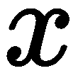作为输入，并告诉我们该图像是真图像还是假图像。在CGAN中，我们希望鉴别器根据条件进行鉴别，这意味着它必须识别生成的图像是真数字7还是假数字7。因此，除了传递输入 ，我们还通过串联
，我们还通过串联 和将条件变量传递给鉴别器。
和将条件变量传递给鉴别器。
如下图所示，我们将和 传递给生成器:
传递给生成器:
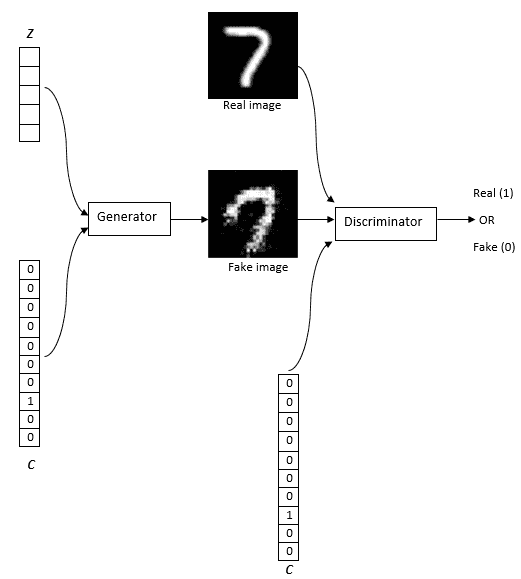
发电机以  上的信息为条件。类似地，除了将真实和伪造的图像传递给鉴别器，我们还将
上的信息为条件。类似地，除了将真实和伪造的图像传递给鉴别器，我们还将 传递给鉴别器。因此，发生器产生数字7，鉴别器学会区分真7和假7。
传递给鉴别器。因此，发生器产生数字7，鉴别器学会区分真7和假7。
我们刚刚学习了如何使用CGAN生成一个特定的数字，但是CGAN的应用并没有到此为止。假设我们需要生成一个具有特定宽度和高度的数字。我们也可以在上施加这个条件，让GAN产生任何想要的图像。
您可能已经注意到，我们的普通GAN和CGAN之间没有太大的区别，只是在CGAN中，我们连接了额外的输入，即调理变量 与发生器和鉴频器的输入。因此，发生器和鉴频器的损耗函数与普通GAN相同，只是它以为条件。
与发生器和鉴频器的输入。因此，发生器和鉴频器的损耗函数与普通GAN相同，只是它以为条件。
因此，鉴频器的损耗函数如下:

发电机的损耗函数由下式给出:

CGAN通过使用梯度下降最小化损失函数来学习。
我们刚刚了解了CGAN的工作原理和架构。为了加强我们的理解，现在我们将学习如何在TensorFlow中实现CGAN来生成特定手写数字(比如数字7)的图像。
首先，加载所需的库:
import warnings
warnings.filterwarnings('ignore')
import numpy as np
import tensorflow as tf
from tensorflow.examples.tutorials.mnist import input_data
tf.logging.set_verbosity(tf.logging.ERROR)
tf.reset_default_graph()
import matplotlib.pyplot as plt
%matplotlib inline
from IPython import display
加载MNIST数据集:
data = input_data.read_data_sets("data/mnist",one_hot=True)
生成器G将噪声 和条件变量
和条件变量 作为输入并返回图像。我们将发电机定义为一个简单的双层前馈网络:
作为输入并返回图像。我们将发电机定义为一个简单的双层前馈网络:
def generator(z, c,reuse=False):
with tf.variable_scope('generator', reuse=reuse):
初始化权重:
w_init = tf.contrib.layers.xavier_initializer()
连接噪声 和条件变量
和条件变量 :
:
inputs = tf.concat([z, c], 1)
定义第一层:
dense1 = tf.layers.dense(inputs, 128, kernel_initializer=w_init)
relu1 = tf.nn.relu(dense1)
定义第二层并用tanh激活函数计算输出:
logits = tf.layers.dense(relu1, 784, kernel_initializer=w_init)
output = tf.nn.tanh(logits)
return output
我们知道鉴别器， ，返回概率；也就是说，它会告诉我们给定图像是真实的概率。除了输入图像
，返回概率；也就是说，它会告诉我们给定图像是真实的概率。除了输入图像 ，它还将条件变量
，它还将条件变量 作为输入。我们还将鉴别器定义为一个简单的双层前馈网络:
作为输入。我们还将鉴别器定义为一个简单的双层前馈网络:
def discriminator(x, c, reuse=False):
with tf.variable_scope('discriminator', reuse=reuse):
初始化权重:
w_init = tf.contrib.layers.xavier_initializer()
连接输入， 和条件变量，
和条件变量， :
:
inputs = tf.concat([x, c], 1)
定义第一层:
dense1 = tf.layers.dense(inputs, 128, kernel_initializer=w_init)
relu1 = tf.nn.relu(dense1)
定义第二层并用sigmoid激活函数计算输出:
logits = tf.layers.dense(relu1, 1, kernel_initializer=w_init)
output = tf.nn.sigmoid(logits)
return output
定义输入的占位符 、条件变量
、条件变量 和噪声
和噪声 :
:
x = tf.placeholder(tf.float32, shape=(None, 784))
c = tf.placeholder(tf.float32, shape=(None, 10))
z = tf.placeholder(tf.float32, shape=(None, 100))
首先，我们将噪声 和条件变量
和条件变量 提供给生成器，它将输出假图像，即
提供给生成器，它将输出假图像，即 :
:
fake_x = generator(z, c)
现在，我们将真实图像 和条件变量一起提供给鉴别器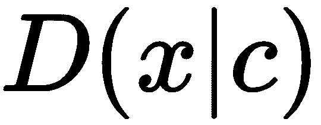，并获得它们为真实的概率:
和条件变量一起提供给鉴别器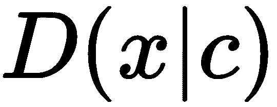，并获得它们为真实的概率:
D_logits_real = discriminator(x,c)
类似地，我们将假图像fake_x和条件变量 提供给鉴别器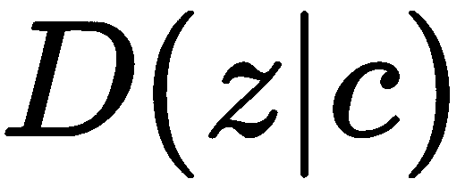，并获得它们为真的概率:
提供给鉴别器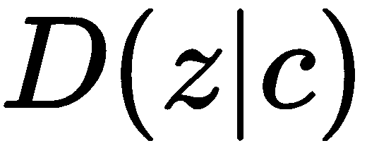，并获得它们为真的概率:
D_logits_fake = discriminator(fake_x, c, reuse=True)
现在我们来看看如何计算损失函数。除了我们添加了一个条件变量之外，它与传统的GAN基本相同。
鉴频器损耗计算如下:
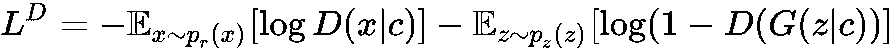
首先，我们将实现第一个术语，即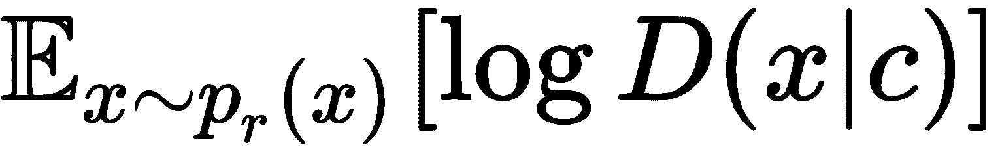:
D_loss_real = tf.reduce_mean(tf.nn.sigmoid_cross_entropy_with_logits(logits=D_logits_real,
labels=tf.ones_like(D_logits_real)))
现在我们将实现第二个术语，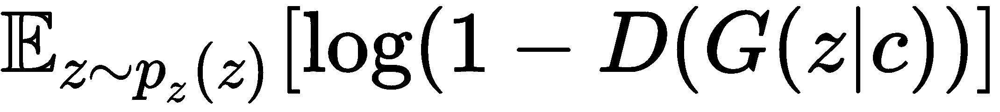:
D_loss_fake = tf.reduce_mean(tf.nn.sigmoid_cross_entropy_with_logits(logits=D_logits_fake,
labels=tf.zeros_like(D_logits_fake)))
最终损失可以写成:
D_loss = D_loss_real + D_loss_fake
发电机损耗如下所示:
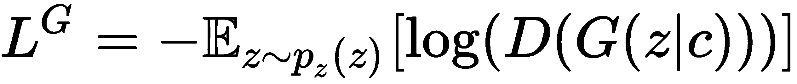
发电机损耗可表示为:
G_loss = tf.reduce_mean(tf.nn.sigmoid_cross_entropy_with_logits(logits=D_logits_fake,
labels=tf.ones_like(D_logits_fake)))
我们需要优化我们的生成器和鉴别器。因此，我们将鉴频器和发生器的参数分别记为theta_D和theta_G:
training_vars = tf.trainable_variables()
theta_D = [var for var in training_vars if var.name.startswith('discriminator')]
theta_G = [var for var in training_vars if var.name.startswith('generator')]
使用Adam优化器优化损失:
learning_rate = 0.001
D_optimizer = tf.train.AdamOptimizer(learning_rate, beta1=0.5).minimize(D_loss,
var_list=theta_D)
G_optimizer = tf.train.AdamOptimizer(learning_rate, beta1=0.5).minimize(G_loss,
var_list=theta_G)
启动TensorFlow会话并初始化变量:
session = tf.InteractiveSession()
tf.global_variables_initializer().run()
定义batch_size:
batch_size = 128
定义时期数和类别数:
num_epochs = 500
num_classes = 10
定义图像和标签:
images = (data.train.images)
labels = data.train.labels
我们设置数字(label)生成为7:
label_to_generate = 7
onehot = np.eye(10)
设置迭代次数:
for epoch in range(num_epochs):
for i in range(len(images) // batch_size):
基于批量的样本图像:
batch_image = images[i * batch_size:(i + 1) * batch_size]
采样条件，即我们要生成的数字:
batch_c = labels[i * batch_size:(i + 1) * batch_size]
样本噪声:
batch_noise = np.random.normal(0, 1, (batch_size, 100))
训练发电机并计算发电机损耗:
generator_loss, _ = session.run([D_loss, D_optimizer], {x: batch_image, c: batch_c, z: batch_noise})
训练鉴频器并计算鉴频器损耗:
discriminator_loss, _ = session.run([G_loss, G_optimizer], {x: batch_image, c: batch_c, z: batch_noise})
随机采样噪声:
noise = np.random.rand(1,100)
选择我们要生成的数字:
gen_label = np.array([[label_to_generate]]).reshape(-1)
将所选数字转换为独热编码向量:
one_hot_targets = np.eye(num_classes)[gen_label]
将噪声和一个热编码条件馈送到生成器，并生成伪图像:
_fake_x = session.run(fake_x, {z: noise, c: one_hot_targets})
_fake_x = _fake_x.reshape(28,28)
打印发生器和鉴别器的损耗，并绘制发生器图像:
print("Epoch: {},Discriminator Loss:{}, Generator Loss: {}".format(epoch,discriminator_loss,generator_loss))
#plot the generated image
display.clear_output(wait=True)
plt.imshow(_fake_x)
plt.show()
如下图所示，生成器现在已经学会生成数字7，而不是随机生成其他数字:
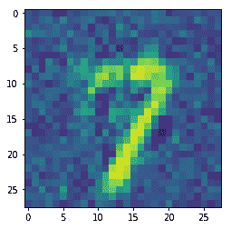
InfoGAN是CGAN的无人监管版本。在CGAN中，我们学习了如何调节发生器和鉴别器，以生成我们想要的图像。但是，当数据集中没有标签时，我们该如何做呢？假设我们有一个没有标签的MNIST数据集；我们如何告诉生成器生成我们感兴趣的特定图像？由于数据集是未标记的，我们甚至不知道数据集中存在的类。
我们知道生成器使用噪声 z 作为输入并生成图像。生成器将关于图像的所有必要信息封装在 z 中，它被称为纠缠表示。它基本上是学习图像在 z 中的语义表示。如果我们能解开这个向量，那么我们就能发现我们图像的有趣特征。
所以，我们将把这个 z 一分为二:
代码是什么？代码 c 基本上是可解释的不清楚的信息。假设我们有MNIST数据，那么，代码 c1 表示数字标签，代码 c2 表示宽度， c3 表示数字的笔画，等等。我们统称他们为 c 。
既然有了 z 和 c ，如何学习有意义的代码 c ？我们能用生成器生成的图像学习有意义的代码吗？假设一个生成器生成了7的图像。现在我们可以说代码 c1是7 ，因为我们知道c1意味着数字标签。
但是既然代码可以表示任何东西，比如标签、手指的宽度、笔画、旋转角度等等——我们怎么才能知道我们想要什么呢？代码 c 将基于先验的选择而被学习。例如，如果我们为 c 选择一个多项式先验，那么我们的InfoGAN可能会为 c 分配一个数字标签。比方说，我们分配一个高斯先验，然后它可能分配一个旋转角度，等等。我们也可以有一个以上的先验。
先前 c 的分布可以是任何东西。InfoGAN根据分布分配不同的属性。在InfoGAN中，代码 c 是根据生成器输出自动推断出来的，这与CGAN不同，在CGAN中，我们显式指定了 c 。
简而言之，我们是根据发电机输出 来推断
来推断 。但是我们到底是如何推断的呢？我们使用信息论中的一个概念，叫做互信息。
。但是我们到底是如何推断的呢？我们使用信息论中的一个概念，叫做互信息。
两个随机变量之间的互信息告诉我们可以从一个随机变量通过另一个随机变量获得的信息量。两个随机变量 x 和 y 之间的互信息可以给出如下:

基本上就是 y 的熵和给定 x 的 y 的条件熵之差。
代码 和发生器输出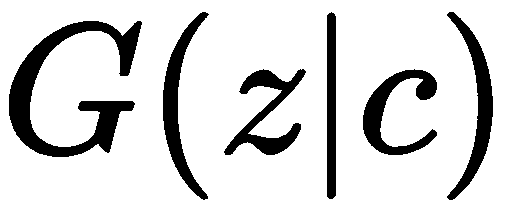之间的交互信息告诉我们通过可以获得多少关于的信息。如果互信息 c 和为高，那么我们可以说知道发电机输出有助于我们推断 c 。但是如果互信息很低，那么我们不能从发电机输出中推断出 c 。我们的目标是最大化相互信息。
和发生器输出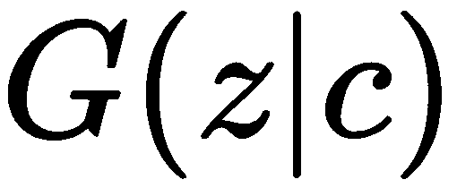之间的交互信息告诉我们通过可以获得多少关于的信息。如果互信息 c 和为高，那么我们可以说知道发电机输出有助于我们推断 c 。但是如果互信息很低，那么我们不能从发电机输出中推断出 c 。我们的目标是最大化相互信息。
代码和发生器输出之间的相互信息如下所示:
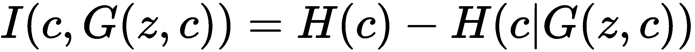
让我们看看公式的元素:
但问题是，我们如何计算？因为要计算这个值，我们需要知道后验概率， ，这个我们还不知道。所以，我们用辅助分布来估计后验概率，
，这个我们还不知道。所以，我们用辅助分布来估计后验概率， :
:
比方说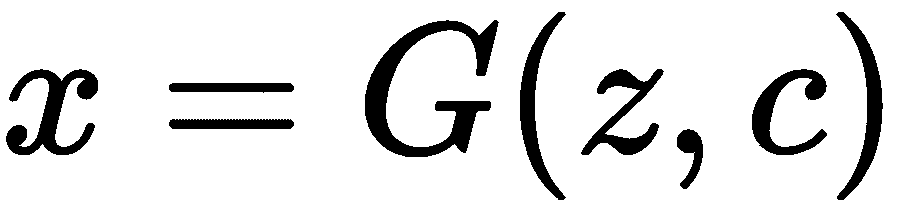，那么我们可以推导出如下互信息:

因此，我们可以说:
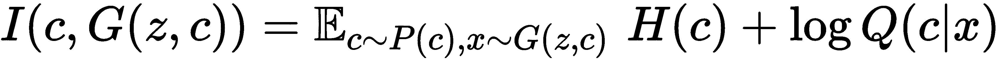
最大化互信息， 基本上意味着在给定生成的输出的情况下，我们最大化关于 c 的知识，也就是说，通过一个变量了解另一个变量。
基本上意味着在给定生成的输出的情况下，我们最大化关于 c 的知识，也就是说，通过一个变量了解另一个变量。
好吧。这到底是怎么回事？我们为什么要这么做？简单来说，我们将发电机的输入分成两部分: z 和 c 。由于 z 和 c 都用于生成图像，它们捕捉图像的语义。代码 c 给了我们关于图像的可解释的清晰信息。因此，给定发电机输出，我们试图找到 c 。但是，由于我们不知道后验概率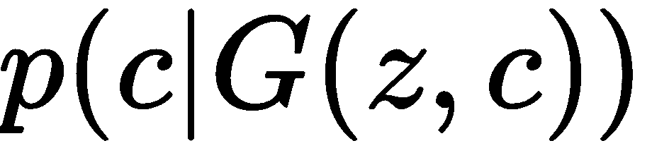，所以我们不能轻易做到这一点，所以我们使用一个辅助分布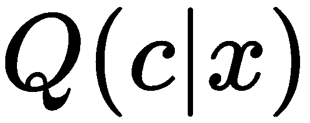来学习 c 。
这个辅助分布基本上是另一个神经网络；我们姑且称这个网络为 Q 网络。 Q 网络的作用是在给定一个发生器图像 x 并由 给出的情况下，预测 c 的可能性。
给出的情况下，预测 c 的可能性。
首先，我们从一个先验样本 c ， p(c) 。然后，我们将 c 和 z 连接起来，并将它们馈送给生成器。接下来，我们将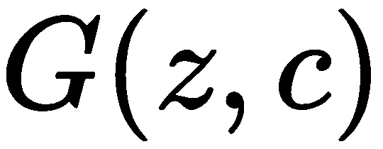给出的生成器结果馈送给鉴别器。我们知道鉴别器的作用是输出给定图像真实的概率。因此，它获取生成器生成的图像并返回概率。此外， Q 网络获取生成的图像，并返回给定生成的图像的 c 的估计值。
鉴别器 D 和 Q 网络都接收发生器图像并返回输出，因此它们共享一些层。由于它们共享一些层，我们将 Q 网络连接到鉴别器，如下图所示:
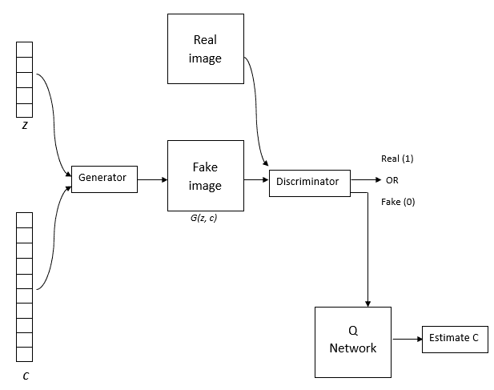
因此，鉴别器返回两个输出:
我们在损失函数中加入了互信息项。
因此，鉴频器的损耗函数为:

发电机的损耗函数由下式给出:

前面的两个等式意味着我们在最大化互信息的同时最小化GAN的损耗。还在困惑InfoGANs？放心吧！我们将通过在TensorFlow中实现InfoGANs来逐步更好地了解它们。
通过在TensorFlow中一步步实现InfoGANs，我们会更好地理解它们。我们将使用MNIST数据集，并了解InfoGAN如何基于生成器输出自动推断代码 。我们建立一个信息DCGAN也就是说，我们在生成器和鉴别器中使用卷积层，而不是普通的神经网络。
。我们建立一个信息DCGAN也就是说，我们在生成器和鉴别器中使用卷积层，而不是普通的神经网络。
首先，我们将导入所有必需的库:
import warnings
warnings.filterwarnings('ignore')
import numpy as np
import tensorflow as tf
from tensorflow.examples.tutorials.mnist import input_data
tf.logging.set_verbosity(tf.logging.ERROR)
import matplotlib.pyplot as plt
%matplotlib inline
加载MNIST数据集:
data = input_data.read_data_sets("data/mnist",one_hot=True)
定义泄漏ReLU激活函数:
def lrelu(X, leak=0.2):
f1 = 0.5 * (1 + leak)
f2 = 0.5 * (1 - leak)
return f1 * X + f2 * tf.abs(X)
生成器 ，它将噪声
，它将噪声 和变量
和变量 作为输入，并返回图像。我们没有在生成器中使用完全连接的层，而是使用解卷积网络，就像我们研究DCGANs时一样:
作为输入，并返回图像。我们没有在生成器中使用完全连接的层，而是使用解卷积网络，就像我们研究DCGANs时一样:
def generator(c, z,reuse=None):
首先，连接噪声、 z、和变量、 :
:
input_combined = tf.concat([c, z], axis=1)
定义第一层，这是一个具有批量标准化和ReLU激活的完全连接的层:
fuly_connected1 = tf.layers.dense(input_combined, 1024)
batch_norm1 = tf.layers.batch_normalization(fuly_connected1, training=is_train)
relu1 = tf.nn.relu(batch_norm1)
定义第二层，它也完全与批量标准化和ReLU激活相关:
fully_connected2 = tf.layers.dense(relu1, 7 * 7 * 128)
batch_norm2 = tf.layers.batch_normalization(fully_connected2, training=is_train)
relu2 = tf.nn.relu(batch_norm2)
展平第二层的结果:
relu_flat = tf.reshape(relu2, [batch_size, 7, 7, 128])
第三层由反褶积组成；即转置卷积运算，随后是批量归一化和ReLU激活:
deconv1 = tf.layers.conv2d_transpose(relu_flat,
filters=64,
kernel_size=4,
strides=2,
padding='same',
activation=None)
batch_norm3 = tf.layers.batch_normalization(deconv1, training=is_train)
relu3 = tf.nn.relu(batch_norm3)
第四层是另一个转置卷积运算:
deconv2 = tf.layers.conv2d_transpose(relu3,
filters=1,
kernel_size=4,
strides=2,
padding='same',
activation=None)
将sigmoid函数应用于第四层的结果，并获得输出:
output = tf.nn.sigmoid(deconv2)
return output
我们了解到鉴别器 和 Q 网络都接收发生器镜像并返回输出，因此它们共享一些层。由于它们共享一些层，我们将 Q 网络连接到鉴别器，正如我们在InfoGAN架构中所学的。正如我们在DCGAN的鉴频器中了解到的那样，我们使用卷积网络，而不是在鉴频器中使用全连接层:
和 Q 网络都接收发生器镜像并返回输出，因此它们共享一些层。由于它们共享一些层，我们将 Q 网络连接到鉴别器，正如我们在InfoGAN架构中所学的。正如我们在DCGAN的鉴频器中了解到的那样，我们使用卷积网络，而不是在鉴频器中使用全连接层:
def discriminator(x,reuse=None):
定义第一层，该层执行卷积运算，随后是泄漏ReLU激活:
conv1 = tf.layers.conv2d(x,
filters=64,
kernel_size=4,
strides=2,
padding='same',
kernel_initializer=tf.contrib.layers.xavier_initializer(),
activation=None)
lrelu1 = lrelu(conv1, 0.2)
我们还在第二层中执行卷积运算，随后是批量归一化和泄漏ReLU激活:
conv2 = tf.layers.conv2d(lrelu1,
filters=128,
kernel_size=4,
strides=2,
padding='same',
kernel_initializer=tf.contrib.layers.xavier_initializer(),
activation=None)
batch_norm2 = tf.layers.batch_normalization(conv2, training=is_train)
lrelu2 = lrelu(batch_norm2, 0.2)
展平第二层的结果:
lrelu2_flat = tf.reshape(lrelu2, [batch_size, -1])
将展平的结果提供给完全连接的层，这是第三层，随后是批量标准化和泄漏ReLU激活:
full_connected = tf.layers.dense(lrelu2_flat,
units=1024,
activation=None)
batch_norm_3 = tf.layers.batch_normalization(full_connected, training=is_train)
lrelu3 = lrelu(batch_norm_3, 0.2)
计算鉴频器输出:
d_logits = tf.layers.dense(lrelu3, units=1, activation=None)
正如我们所知，我们将 Q 网络连接到鉴频器。定义将鉴频器的最后一层作为输入的 Q 网络的第一层:
full_connected_2 = tf.layers.dense(lrelu3,
units=128,
activation=None)
batch_norm_4 = tf.layers.batch_normalization(full_connected_2, training=is_train)
lrelu4 = lrelu(batch_norm_4, 0.2)
定义第二层 Q 网络:
q_net_latent = tf.layers.dense(lrelu4,
units=74,
activation=None)
估计值 c :
q_latents_categoricals_raw = q_net_latent[:,0:10]
c_estimates = tf.nn.softmax(q_latents_categoricals_raw, dim=1)
返回鉴别器logits和估算的 c 值作为输出:
return d_logits, c_estimates
现在我们定义输入的占位符 、噪声
、噪声 和代码:
和代码:
batch_size = 64
input_shape = [batch_size, 28,28,1]
x = tf.placeholder(tf.float32, input_shape)
z = tf.placeholder(tf.float32, [batch_size, 64])
c = tf.placeholder(tf.float32, [batch_size, 10])
is_train = tf.placeholder(tf.bool)
首先，我们将噪声 和代码
和代码 馈送给生成器，它将根据等式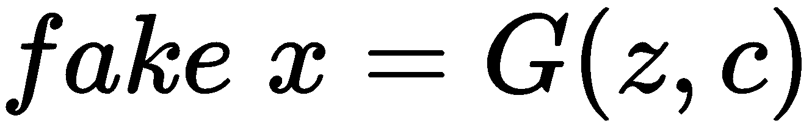输出假图像:
馈送给生成器，它将根据等式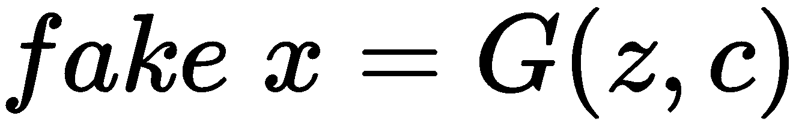输出假图像:
fake_x = generator(c, z)
现在，我们将真实图像 提供给鉴别器
提供给鉴别器 ，并获得图像真实的概率。与此同时，我们也获得了对真实图像的
，并获得图像真实的概率。与此同时，我们也获得了对真实图像的 的估计:
的估计:
D_logits_real, c_posterior_real = discriminator(x)
类似地，我们将假图像提供给鉴别器，得到图像是真实图像的概率以及假图像的估计值 :
:
D_logits_fake, c_posterior_fake = discriminator(fake_x,reuse=True)
现在我们来看看如何计算损失函数。
鉴频器损耗计算如下:

由于InfoGAN的鉴频器损耗与CGAN相同，因此实现鉴频器损耗与我们在CGAN部分所学的相同:
#real loss
D_loss_real = tf.reduce_mean(tf.nn.sigmoid_cross_entropy_with_logits(logits=D_logits_real,
labels=tf.ones(dtype=tf.float32, shape=[batch_size, 1])))
#fake loss
D_loss_fake = tf.reduce_mean(tf.nn.sigmoid_cross_entropy_with_logits(logits=D_logits_fake,
labels=tf.zeros(dtype=tf.float32, shape=[batch_size, 1])))
#final discriminator loss
D_loss = D_loss_real + D_loss_fake
发电机的损耗函数如下所示:

发电机损耗实现为:
G_loss = tf.reduce_mean(tf.nn.sigmoid_cross_entropy_with_logits(logits=D_logits_fake,
labels=tf.ones(dtype=tf.float32, shape=[batch_size, 1])))
我们从鉴别器和发电机损耗中减去互信息。因此，鉴频器和发生器的最终损耗函数如下所示:

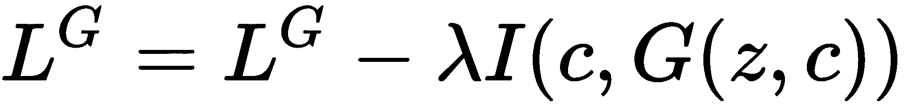
交互信息可以计算如下:

首先，我们为 定义一个先验:
定义一个先验:
c_prior = 0.10 * tf.ones(dtype=tf.float32, shape=[batch_size, 10])
 的熵表示为
的熵表示为 。我们知道熵的计算方法是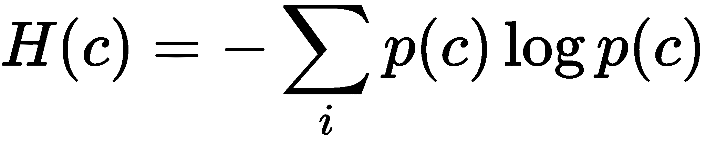:
。我们知道熵的计算方法是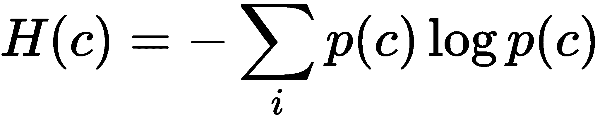:
entropy_of_c = tf.reduce_mean(-tf.reduce_sum(c * tf.log(tf.clip_by_value(c_prior, 1e-12, 1.0)),axis=-1))
给定 时
时 的条件熵为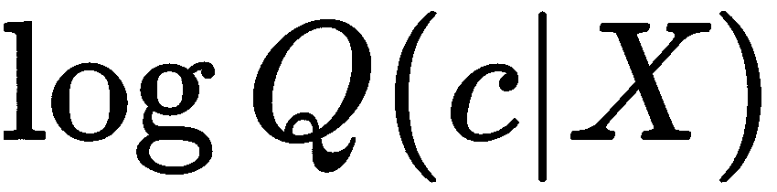。条件熵的代码如下:
的条件熵为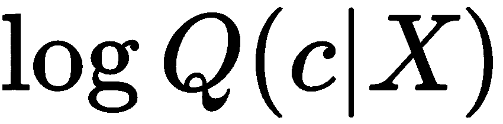。条件熵的代码如下:
log_q_c_given_x = tf.reduce_mean(tf.reduce_sum(c * tf.log(tf.clip_by_value(c_posterior_fake, 1e-12, 1.0)), axis=-1))
互信息给定为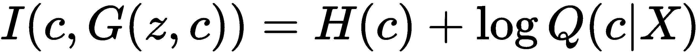:
mutual_information = entropy_of_c + log_q_c_given_x
鉴频器和发生器的最终损耗由下式给出:
D_loss = D_loss - mutual_information
G_loss = G_loss - mutual_information
现在我们需要优化我们的生成器和鉴别器。因此，我们将鉴频器和发生器的参数分别收集为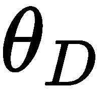和 :
:
training_vars = tf.trainable_variables()
theta_D = [var for var in training_vars if 'discriminator' in var.name]
theta_G = [var for var in training_vars if 'generator' in var.name]
使用Adam优化器优化损失:
learning_rate = 0.001
D_optimizer = tf.train.AdamOptimizer(learning_rate).minimize(D_loss,var_list = theta_D)
G_optimizer = tf.train.AdamOptimizer(learning_rate).minimize(G_loss, var_list = theta_G)
定义批次大小和历元数，并初始化所有张量流变量:
num_epochs = 100
session = tf.InteractiveSession()
session.run(tf.global_variables_initializer())
定义可视化结果的辅助函数:
def plot(c, x):
c_ = np.argmax(c, 1)
sort_indices = np.argsort(c_, 0)
x_reshape = np.reshape(x[sort_indices], [batch_size, 28, 28])
x_reshape = np.reshape( np.expand_dims(x_reshape, axis=0), [4, (batch_size // 4), 28, 28])
values = []
for i in range(0,4):
row = np.concatenate( [x_reshape[i,j,:,:] for j in range(0,(batch_size // 4))], axis=1)
values.append(row)
return np.concatenate(values, axis=0)
开始训练并生成图像。对于每一次100迭代，我们打印由生成器生成的图像:
onehot = np.eye(10)
for epoch in range(num_epochs):
for i in range(0, data.train.num_examples // batch_size):
对图像进行采样:
x_batch, _ = data.train.next_batch(batch_size)
x_batch = np.reshape(x_batch, (batch_size, 28, 28, 1))
采样 c 的值:
c_ = np.random.randint(low=0, high=10, size=(batch_size,))
c_one_hot = onehot[c_]
样本噪声 z :
z_batch = np.random.uniform(low=-1.0, high=1.0, size=(batch_size,64))
优化发生器和鉴频器的损耗:
feed_dict={x: x_batch, c: c_one_hot, z: z_batch, is_train: True}
_ = session.run(D_optimizer, feed_dict=feed_dict)
_ = session.run(G_optimizer, feed_dict=feed_dict)
每100次迭代打印一次发生器图像:
if i % 100 == 0:
discriminator_loss = D_loss.eval(feed_dict)
generator_loss = G_loss.eval(feed_dict)
_fake_x = fake_x.eval(feed_dict)
print("Epoch: {}, iteration: {}, Discriminator Loss:{}, Generator Loss: {}".format(epoch,i,discriminator_loss,generator_loss))
plt.imshow(plot(c_one_hot, _fake_x))
plt.show()
我们可以看到生成器是如何在每次迭代中进化并生成更好的数字的:
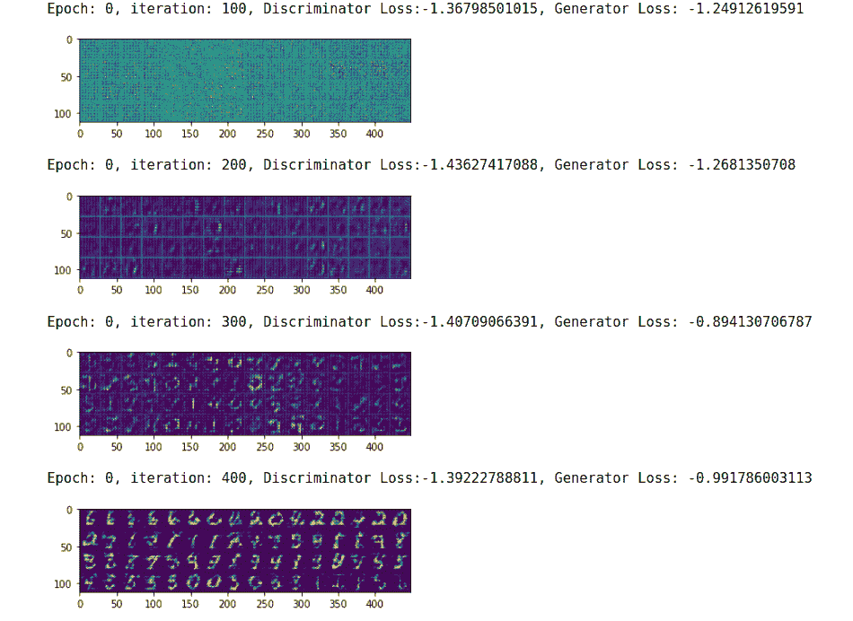
我们已经学习了几种类型的gan，它们的应用是无穷无尽的。我们已经看到生成器如何学习真实数据的分布并生成新的真实样本。我们现在将看到一种真正不同且非常创新的GAN类型，称为 CycleGAN 。
与其他GAN不同，CycleGAN将数据从一个域映射到另一个域，这意味着我们在这里试图了解从一个域的图像分布到另一个域的图像分布的映射。简单来说，我们把图像从一个领域翻译到另一个领域。
这是什么意思？假设我们想要将灰度图像转换成彩色图像。灰度图像是一个域，彩色图像是另一个域。CycleGAN学习这两个域之间的映射，并在它们之间进行翻译。这意味着给定灰度图像，CycleGAN将图像转换成彩色图像。
CycleGANs的应用有很多，例如将真实照片转换为艺术图片、季节转换、照片增强等等。如下图所示，您可以看到CycleGAN如何在不同的域之间转换图像:
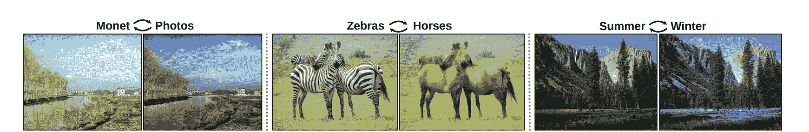
但是CycleGANs有什么特别之处呢？这是他们在没有任何配对例子的情况下将图像从一个领域转换到另一个领域的能力。假设我们正在将照片(源)转换为绘画(目标)。在一个普通的图像到图像的翻译中，我们如何做到这一点？我们通过成对收集一些照片及其对应的绘画来准备训练数据，如下图所示:
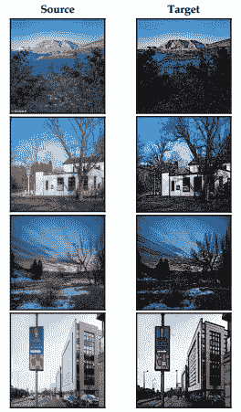
为每个用例收集这些配对的数据点是一项昂贵的任务，我们可能没有很多记录或配对。这就是CycleGAN的最大优势所在。它不要求数据成对对齐。从照片转换成画，我们只需要一堆照片和一堆画。它们不必相互映射或对齐。
如下图，我们一栏有些照片，另一栏有些画；如你所见，它们没有配对。它们是完全不同的图像:
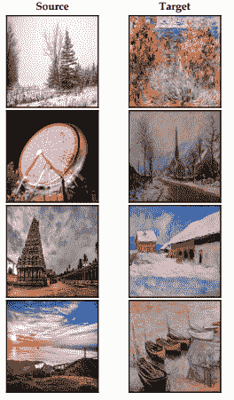
因此，要将图像从任何源域转换到目标域，我们只需要两个域中的一组图像，而不必配对。现在让我们看看它们是如何工作的，以及它们是如何学习源域和目标域之间的映射的。
与其他GAN不同，CycleGAN由两个发生器和两个鉴别器组成。让我们用 表示源域中的图像，用
表示源域中的图像，用 表示目标域中的图像。我们需要学习
表示目标域中的图像。我们需要学习 和之间的映射。
和之间的映射。
假设我们正在学习将一幅真实的图片 转换成一幅画，如下图所示:
转换成一幅画，如下图所示:
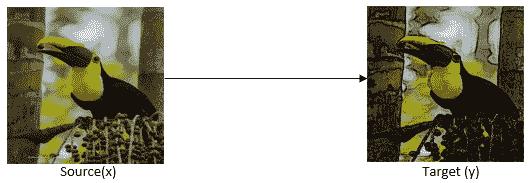
我们有两个发电机， 和
和 。
。 的作用是学习从
的作用是学习从 到
到 的映射。如上所述，
的映射。如上所述， 的作用是学习将照片翻译成画作，如下图所示:
的作用是学习将照片翻译成画作，如下图所示:
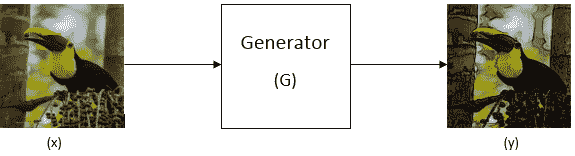
它试图生成一个假的目标图像，这意味着它将源图像 作为输入，并生成一个假的目标图像:
作为输入，并生成一个假的目标图像:
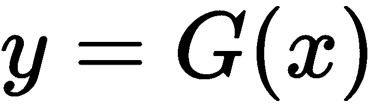
生成器 的作用是学习从到
的作用是学习从到 的映射，学习从绘画翻译成真实的图片，如下图所示:
的映射，学习从绘画翻译成真实的图片，如下图所示:
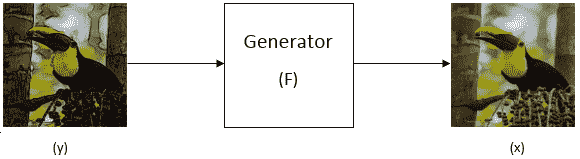
它试图生成一个假的源图像，这意味着它将目标图像作为输入，并生成一个假的源图像 :
:
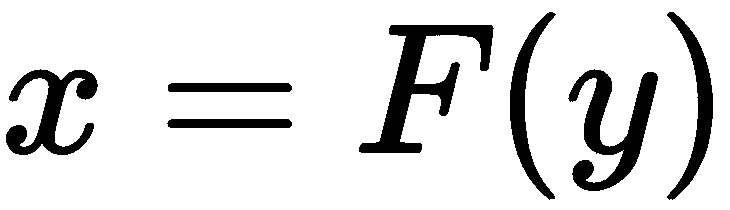
类似于生成器，我们有两个鉴别器， 和
和 。鉴别器
。鉴别器 的作用是鉴别真正的源图像
的作用是鉴别真正的源图像 和假的源图像
和假的源图像 。我们知道假的源图像是由生成器
。我们知道假的源图像是由生成器 生成的。
生成的。
给定一幅图像给鉴别器 ，它返回该图像是真实源图像的概率:
，它返回该图像是真实源图像的概率:
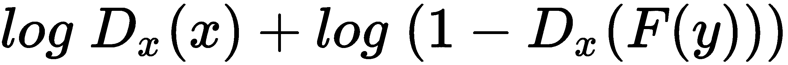
下图显示了鉴别器，如您所见，它将生成器F生成的真实源图像x和伪源图像作为输入，并返回图像是真实源图像的概率:
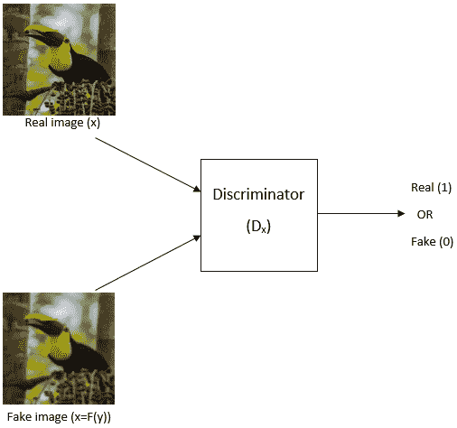
鉴别器 的作用是鉴别真实目标图像
的作用是鉴别真实目标图像 和虚假目标图像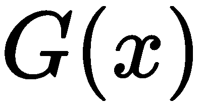。我们知道假目标图像是由生成器生成的，
和虚假目标图像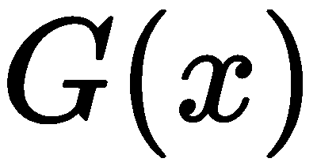。我们知道假目标图像是由生成器生成的， 。给鉴别器
。给鉴别器 一个图像，它返回图像是真实目标图像的概率:
一个图像，它返回图像是真实目标图像的概率:
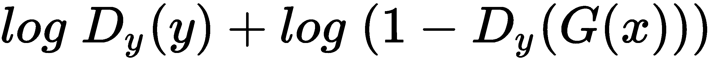
下图显示了鉴别器，如您所见，它将真实目标图像和生成器生成的虚假目标图像作为输入，并返回图像为真实目标图像的概率:
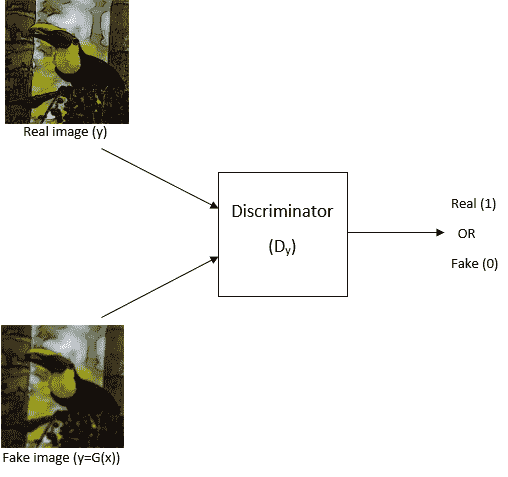
在CycleGANs中，我们有两个生成器和两个鉴别器。生成器学习将图像从一个域翻译到另一个域，鉴别器尝试在翻译的图像之间进行鉴别。
因此，我们可以说鉴频器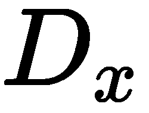的损耗函数可以表示如下:
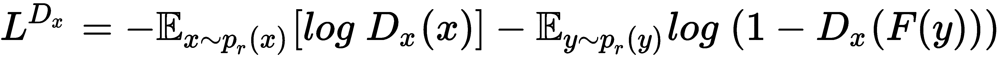
类似地，鉴频器 的损耗函数可以表示如下:
的损耗函数可以表示如下:

发电机 的损失函数可表示如下:
的损失函数可表示如下:
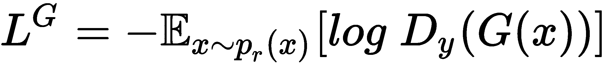
发电机 的损失函数可给出如下:
的损失函数可给出如下:

总的来说，最终损失可以写成如下形式:

对抗损失本身并不能确保图像的正确映射。例如，生成器可以将来自源域的图像映射到可以匹配目标分布的目标域中的图像的随机排列。
因此，为了避免这种情况，我们引入一种称为周期一致loT9】ss的额外损耗。它强制两个发生器 G 和 F 保持周期一致。
让我们回忆一下发电机的功能:
我们知道生成器 G 获取源图像 x 并将其转换为假目标图像 y 。现在，如果我们将这个生成的假目标图像 y 提供给生成器 F ，它必须返回原始源图像 x 。很困惑，对吧？
看下图；我们有一个源图像， x 。首先，我们将这个图像提供给生成器 G ，它返回假的目标图像。现在我们获取这个假的目标图像， y ，并将其馈送给生成器 F ，它必须返回原始的源图像:

上述等式可以表示如下:
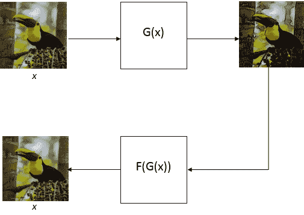
这被称为前向一致性丢失，可以表示如下:
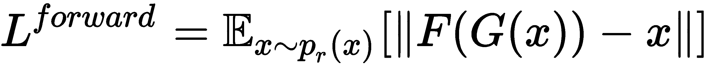
同样，我们可以指定向后一致损失，如下图所示。假设我们有一个原始目标图像， y 。我们将这个 y 馈送给鉴别器 F ，它返回伪源图像 x 。现在我们将这个假的源图像 x 馈送给生成器 G ，它必须返回原始的目标图像 y :
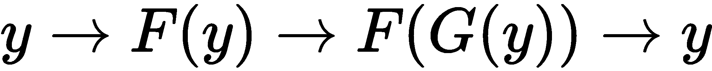
前面的等式可以表示为:
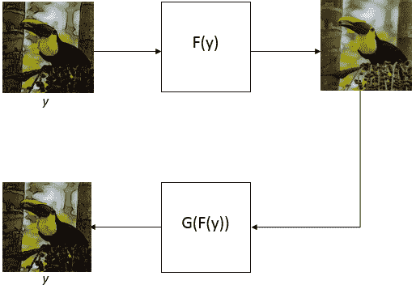
向后一致性损失可以表示如下:
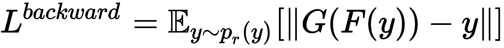
因此，加上前向和后向一致性损失，我们可以将周期一致性损失写成:
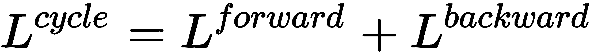

我们希望我们的发电机循环一致，因此，我们用循环一致损耗乘以它们的损耗。因此，最终损失函数可由下式给出:

现在我们将学习如何在TensorFlow中实现一个CycleGAN。我们将了解如何使用CycleGAN将图片转换为绘画:

本节使用的数据集可以从https://people . eecs . Berkeley . edu/~ tae sung _ park/cycle gan/datasets/Monet 2 photo . zip下载。下载完数据集后，解压存档文件；它将由四个文件夹组成，trainA、trainB、testA和testB，包含训练和测试图像。
trainA文件夹包含油画(莫奈)，而trainB文件夹包含照片。由于我们将照片( x )映射到绘画( y )，包含照片的trainB文件夹将是我们的源图像， ，包含绘画的trainA文件夹将是我们的目标图像，
，包含绘画的trainA文件夹将是我们的目标图像， 。
。
CycleGAN的完整代码以及一步一步的解释可以在Jupyter笔记本上找到，网址是https://github . com/packt publishing/Hands-On-Deep-Learning-Algorithms-with-Python。
我们将只看如何在TensorFlow中实现CycleGAN并将源图像映射到目标域，而不是看整个代码。你也可以在https://github . com/packt publishing/Hands-On-Deep-Learning-Algorithms-with-Python查看完整代码。
定义CycleGAN类:
class CycleGAN:
def __init__(self):
定义输入的占位符X和输出的占位符Y:
self.X = tf.placeholder("float", shape=[batchsize, image_height, image_width, 3])
self.Y = tf.placeholder("float", shape=[batchsize, image_height, image_width, 3])
定义将 映射到
映射到 的生成器
的生成器 :
:
G = generator("G")
定义将 映射到
映射到 的生成器
的生成器 :
:
F = generator("F")
定义鉴别器 ，用于鉴别真实源图像和伪造源图像:
，用于鉴别真实源图像和伪造源图像:
self.Dx = discriminator("Dx")
定义鉴别器 ，用于鉴别真实目标图像和虚假目标图像:
，用于鉴别真实目标图像和虚假目标图像:
self.Dy = discriminator("Dy")
生成伪源图像:
self.fake_X = F(self.Y)
生成假目标图像:
self.fake_Y = G(self.X)
得到logits:
#real source image logits
self.Dx_logits_real = self.Dx(self.X)
#fake source image logits
self.Dx_logits_fake = self.Dx(self.fake_X, True)
#real target image logits
self.Dy_logits_fake = self.Dy(self.fake_Y, True)
#fake target image logits
self.Dy_logits_real = self.Dy(self.Y)
我们知道循环一致性损失给出如下:

我们可以如下实现周期一致性丢失:
self.cycle_loss = tf.reduce_mean(tf.abs(F(self.fake_Y, True) - self.X)) + \
tf.reduce_mean(tf.abs(G(self.fake_X, True) - self.Y))
定义我们两个鉴别器 和
和 的损失。
的损失。
我们可以用Wasserstein距离重写鉴别器的损失函数:
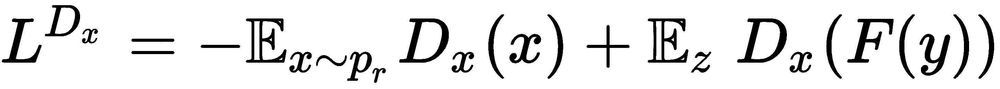

因此，鉴频器的损耗实现如下:
self.Dx_loss = -tf.reduce_mean(self.Dx_logits_real) + tf.reduce_mean(self.Dx_logits_fake)
self.Dy_loss = -tf.reduce_mean(self.Dy_logits_real) + tf.reduce_mean(self.Dy_logits_fake)
定义两个发电机的损耗， 和
和 。我们可以用Wasserstein距离将发电机的损失函数改写为:
。我们可以用Wasserstein距离将发电机的损失函数改写为:
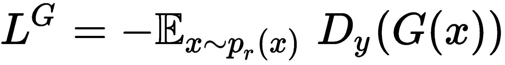
因此，两个发电机的损耗乘以循环一致性损耗，cycle_loss实现为:
self.G_loss = -tf.reduce_mean(self.Dy_logits_fake) + 10. * self.cycle_loss
self.F_loss = -tf.reduce_mean(self.Dx_logits_fake) + 10. * self.cycle_loss
使用Adam优化器优化鉴别器和生成器:
#optimize the discriminator
self.Dx_optimizer = tf.train.AdamOptimizer(2e-4, beta1=0., beta2=0.9).minimize(self.Dx_loss, var_list=[self.Dx.var])
self.Dy_optimizer = tf.train.AdamOptimizer(2e-4, beta1=0., beta2=0.9).minimize(self.Dy_loss, var_list=[self.Dy.var])
#optimize the generator
self.G_optimizer = tf.train.AdamOptimizer(2e-4, beta1=0., beta2=0.9).minimize(self.G_loss, var_list=[G.var])
self.F_optimizer = tf.train.AdamOptimizer(2e-4, beta1=0., beta2=0.9).minimize(self.F_loss, var_list=[F.var])
一旦我们开始训练模型，我们可以看到鉴别器和生成器的损失如何随着迭代而减少:
Epoch: 0, iteration: 0, Dx Loss: -0.6229429245, Dy Loss: -2.42867970467, G Loss: 1385.33557129, F Loss: 1383.81530762, Cycle Loss: 138.448059082 Epoch: 0, iteration: 50, Dx Loss: -6.46077537537, Dy Loss: -7.29514217377, G Loss: 629.768066406, F Loss: 615.080932617, Cycle Loss: 62.6807098389 Epoch: 1, iteration: 100, Dx Loss: -16.5891685486, Dy Loss: -16.0576553345, G Loss: 645.53137207, F Loss: 649.854919434, Cycle Loss: 63.9096908569
现在我们将看到一种最有趣、最迷人的GAN，它被称为堆叠GAN 。如果我说StackGANs仅仅基于文本描述就能生成照片般逼真的图像，你能相信吗？嗯，是的。他们能做到。给定文本描述，它们可以生成逼真的图像。
我们先来了解一下艺术家是如何画出一个形象的。在第一阶段，艺术家绘制原始形状，并创建一个基本的轮廓，形成图像的初始版本。在下一阶段，他们通过使图像更加真实和吸引人来增强图像。
StackGANs以类似的方式工作。他们将生成图像的过程分为两个阶段。就像艺术家绘画一样，在第一阶段，他们生成一个基本的轮廓，原始的形状，并创建一个低分辨率版本的图像，在第二阶段，他们通过使其更加逼真来增强第一阶段生成的图片，然后将它们转换为高分辨率的图像。
但是StackGANs是怎么做到的呢？
他们使用两个GANs，每个阶段一个。第一级中的GAN生成基本图像并将其发送到下一级中的GAN，下一级将基本低分辨率图像转换成适当的高分辨率图像。下图显示了StackGANs如何根据文本描述在每个阶段生成图像:
资料来源:https://arxiv.org/pdf/1612.03242.pdf
正如你所看到的，在第一阶段，我们有一个低分辨率版本的图像，但在第二阶段，我们有良好的清晰度高分辨率图像。但是，StackGAN是怎么做到的呢？还记得吗，当我们学习有条件的GAN时，我们可以通过调节它们来使GAN生成我们想要的图像。
我们只是在两个阶段都用到它们。在第一阶段，我们的网络是基于文本描述的。有了这个文本描述，他们就生成了一个图像的基本版本。在第二阶段，我们的网络基于第一阶段生成的图像以及文本描述进行调节。
但是为什么我们在第二阶段又要以文字描述为条件呢？因为在第一阶段，我们错过了文本描述中指定的一些细节来创建图像的基本版本。因此，在第二阶段，我们再次以文本描述为条件来修复缺失的信息，并使我们的图像更加真实。
凭借这种仅基于文本生成图片的能力，它被用于许多应用。它在娱乐业中被大量使用，例如，仅仅基于描述创建框架，它也可以用于生成漫画等等。
现在我们已经对StackGANs的工作原理有了一个基本的了解，我们将更仔细地研究它们的架构，看看它们是如何从文本中生成图片的。
下图显示了堆栈根的完整体系结构:
资料来源:https://arxiv.org/pdf/1612.03242.pdf
我们将逐一查看每个组件。
我们有一个文本描述作为GAN的输入。基于这些描述，它必须生成图像。但是他们是如何理解文字的含义来生成图片的呢？
首先，我们使用编码器将文本转换成嵌入文本。我们用 来表示这个文本嵌入。我们能创造出的变体吗？通过创建文本嵌入的变体，，我们可以有额外的训练对，并且我们还可以增加对小扰动的鲁棒性。
来表示这个文本嵌入。我们能创造出的变体吗？通过创建文本嵌入的变体，，我们可以有额外的训练对，并且我们还可以增加对小扰动的鲁棒性。
设为均值， 为我们文本嵌入的对角协方差矩阵，。现在我们从独立的高斯分布中随机抽取一个额外的条件变量
为我们文本嵌入的对角协方差矩阵，。现在我们从独立的高斯分布中随机抽取一个额外的条件变量 。它帮助我们创造不同的文本描述和它们的含义。我们知道相同的文本可以用不同的方式书写，所以使用条件变量，我们可以将不同版本的文本映射到图像。
。它帮助我们创造不同的文本描述和它们的含义。我们知道相同的文本可以用不同的方式书写，所以使用条件变量，我们可以将不同版本的文本映射到图像。
因此，一旦我们有了文本描述，我们将使用编码器提取它们的嵌入，然后我们计算它们的均值和协方差。然后，我们从文本嵌入的高斯分布中采样，。
好了，现在我们有一个文本嵌入， ，还有一个条件变量，
，还有一个条件变量， 。我们将看到它是如何被用来生成图像的基本版本的。
。我们将看到它是如何被用来生成图像的基本版本的。
我们知道生成器的目标是通过学习真实的数据分布来生成一个假图像。首先，我们从高斯分布中采样噪声，并创建 z 。然后，我们将 z 与我们的条件变量连接起来，并将其作为输入提供给生成器，该生成器输出图像的基本版本。
发电机的损耗函数如下所示:

让我们来看看这个公式:
 暗示我们从真实数据分布中抽取文本描述。
暗示我们从真实数据分布中抽取文本描述。 暗示发生器获取噪声，调节变量返回图像。我们将生成的图像提供给鉴别器。
暗示发生器获取噪声，调节变量返回图像。我们将生成的图像提供给鉴别器。除了这种损失，我们还将正则项添加到我们的损失函数中，这意味着标准高斯分布和条件高斯分布之间的KL散度。这有助于我们避免过度拟合。
因此，发电机的最终损失函数变为:
现在，我们将生成的图像提供给鉴别器，鉴别器返回图像真实的概率。鉴频器损耗计算如下:

这里:
 ，以文字描述为条件，
，以文字描述为条件，
我们已经了解了第一阶段如何生成图像的基本版本。现在，在第二阶段，我们修复了第一阶段生成的图像的缺陷，并生成了更真实的图像版本。我们用前一阶段生成的图像以及文本嵌入来调节我们的网络。
阶段II中的生成器不是将噪声作为输入，而是将前一阶段生成的图像作为输入，并且它以文本描述为条件。
这里，意味着我们从 中抽取。这基本上意味着我们正在对第一阶段生成的图像进行采样。
中抽取。这基本上意味着我们正在对第一阶段生成的图像进行采样。
 暗示我们正在从给定的真实数据分布中抽取文本，
暗示我们正在从给定的真实数据分布中抽取文本， 。
。
那么发电机损耗可由下式给出:

随着正则化，我们的发电机的损失函数变成:
鉴别器的目标是告诉我们图像是来自真实分布还是生成器分布。因此，鉴频器的损耗函数如下所示:

本章一开始，我们学习了条件句，以及如何用它们来生成我们感兴趣的图像。
后来，我们学习了InfoGANs，在info gans中，代码 c 是根据生成的输出自动推断出来的，不像CGAN，在CGAN中我们显式地指定了 c 。为了推断出 c ，我们需要找到后验概率 ，而我们没有这个后验概率。所以，我们使用辅助分布。我们使用互信息来最大化互信息，在给定发电机输出的情况下，最大化我们关于 c 的知识。
，而我们没有这个后验概率。所以，我们使用辅助分布。我们使用互信息来最大化互信息，在给定发电机输出的情况下，最大化我们关于 c 的知识。
然后，我们学习了CycleGANs，它将数据从一个域映射到另一个域。我们试图学习从照片领域的图像分布到绘画领域的图像分布的映射。最后，我们理解了StackGANs是如何从文本描述生成照片级真实感图像的。
在下一章，我们将学习自动编码器和它们的类型。
回答以下问题，衡量你从本章中学到了多少:
有关更多信息，请参考以下链接: